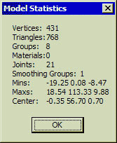

The Model Statistics Window
The model statistics window provides useful information that should be
referred to throughout the construction of your model. Some games you may
make models for will have an optimum number of polygons (triangles, faces),
joints etc, so its important to first check your target game then make sure
your model suits these requirements by using the Model Statistics window.
This feature can be accessed from the main menu by clicking Tools->Show
Model Statistics.

|
Vertices
|
This
provides the number of vertices in the model. For an explanation of what a
vertex is refer to the 3D
Theory & Practice section.
|
|
Triangles
|
Provides
the number of triangles (faces, polygons) in the model. For an explanation
of what a polygon is refer to the 3D Theory & Practice
section.
|
|
Groups
|
Provides
the number of groups in the model.
|
|
Materials
|
Provides
the number of materials created for the model.
|
|
Joints
|
Provides
the number of joints in the model.
|
|
Smoothing
Groups
|
Provides
the number of smoothing groups set up in the model.
|
|
Mins
|
This,
coupled with the Maxs provides the bounding box for the model. Each number
represents the value of the X, Y and Z for the vertex that is to the
extreme X, Y or Z plane. These are not necessarily the coordinates for one
vertex.
|
|
Maxs
|
This is
the same as mins but these values represent the maximum values of the X, Y
and Z of the model's vertices.
|
|
Center
|
This is
the centre location of the model, not of the world. For example if you were
modelling a human figure its centre point would be just below its navel,
this is the same no matter where on the Y axis the model happens to be
positioned.
|
|